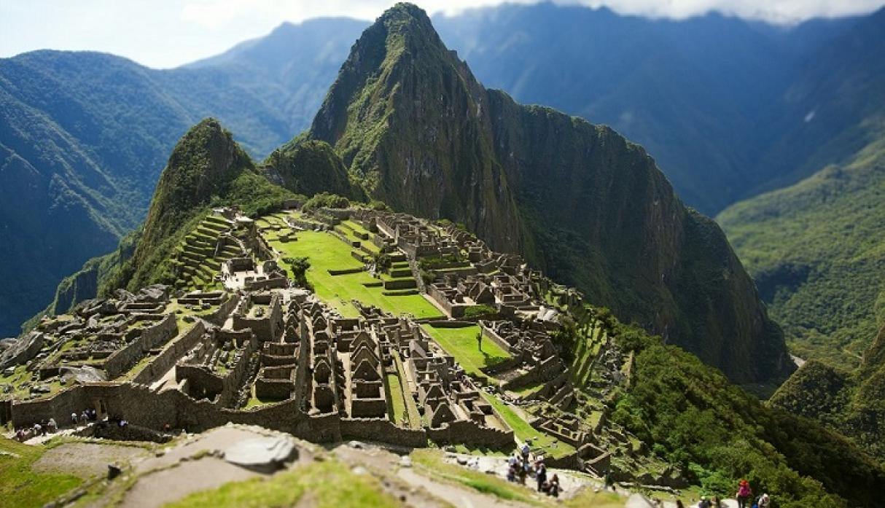

Macchu Picchu
25/07/2019 - Cuzco Peru
1 Comentario

Es el nombre contemporáneo que se da a una llaqta —antiguo poblado incaico andino— construida antes del siglo XV, ubicada en la Cordillera Oriental del sur de Perú, en la cadena montañosa de Los Andes a 2430 m.s.n.m.. Está ubicado en la Región Cusco, Provincia de Urubamba, Distrito de Machupicchu, sobre el Valle Sagrado de los Incas, a 80 kilómetros al noroeste de la ciudad de Cuzco, ciudad del Perú y por donde fluye el río Urubamba, que atraviesa la Cordillera y se origina un cañón con clima de montaña tropical. Según muchos estudiosos su nombre original habría sido Llaqtapata.
Machu Picchu es considerada, al mismo tiempo, una obra maestra de la arquitectura y la ingeniería. Sus peculiares características arquitectónicas y paisajísticas, y el velo de misterio que ha tejido a su alrededor buena parte de la literatura publicada sobre el sitio, lo han convertido en uno de los destinos turísticos más populares del planeta, así como una de las 7° maravillas del mundo
Machu Picchu fue declarado Santuario Histórico Peruano en 1981 y está en la Lista del Patrimonio de la Humanidad de la Unesco desde 1983, como parte de todo un conjunto cultural y ecológico conocido bajo la denominación Santuario histórico de Machu Picchu. El 7 de julio de 2007 Machu Picchu fue declarada como una de las nuevas siete maravillas del mundo moderno en una ceremonia realizada en Lisboa (Portugal), que contó con la participación de cien millones de votantes en el mundo entero. Machu Picchu fue votada como una de las Nuevas Siete Maravillas del Mundo en una encuesta mundial en Internet.
Lima, capital del Perú
25/07/2019 - Lima Perú
1 Comentario
Lima es la ciudad capital de la República del Perú. Se encuentra situada en la costa central del país, a orillas del océano Pacífico, conformando una extensa y populosa área urbana conocida como Lima Metropolitana, flanqueada por el desierto costero y extendida sobre los valles de los ríos Chillón, Rímac y Lurín. Según el censo peruano de 2017, Lima cuenta con más de 8,5 millones de habitantes; mientras que su aglomeración urbana cuenta con más de 9,5 millones de habitantes, el 30% de la población peruana, cifras que la convierten en la ciudad más poblada del país.
El 18 de enero de 1535, se efectuó la fundación española con el nombre de la Ciudad de los Reyes en la región agrícola conocida por los indígenas como Limaq, nombre que adquirió con el tiempo. Fue la capital del Virreinato del Perú y la más grande e importante ciudad de América del Sur durante la América imperial española. Después de la Independencia pasó a ser la capital de la República.
En la actualidad está considerada como el centro político, cultural, financiero y comercial del país. A nivel internacional, es la tercera área metropolitana más poblada de Hispanoamérica, además la ciudad ocupa el quinto lugar dentro de las ciudades más pobladas de América Latina y es una de las treinta aglomeraciones urbanas más pobladas del mundo. Por su importancia geoestratégica, ha sido definida como una ciudad global de «clase beta»
En octubre de 2013, Lima fue elegida para albergar los Juegos Panamericanos 2019. También fue sede de la Conferencia de las Naciones Unidas sobre el Cambio Climático de diciembre de 2014 y del concurso Miss Universo 1982.
Perfil del Autor
Hola, me llamo José y soy de Lima-Perú, tengo 50 años y me gusta viajar.
Conocer el Perú es toda una aventura, amo a mi pais, su geografia, su historia ancestral, la tierra de los Incas, de la Marinera, de la mejor gastronomia de América y una de las mejores del mundo, de las bellisimas playas del Norte, del Pisco, del nacimiento del rio Amazonas el mas caudaloso del mundo, del Lago Titicaca el lago navegable mas alto del mundo,de Macchu Picchu una de las siete nuevas maravillas del mundo. Visita Perú no te arrepentiras